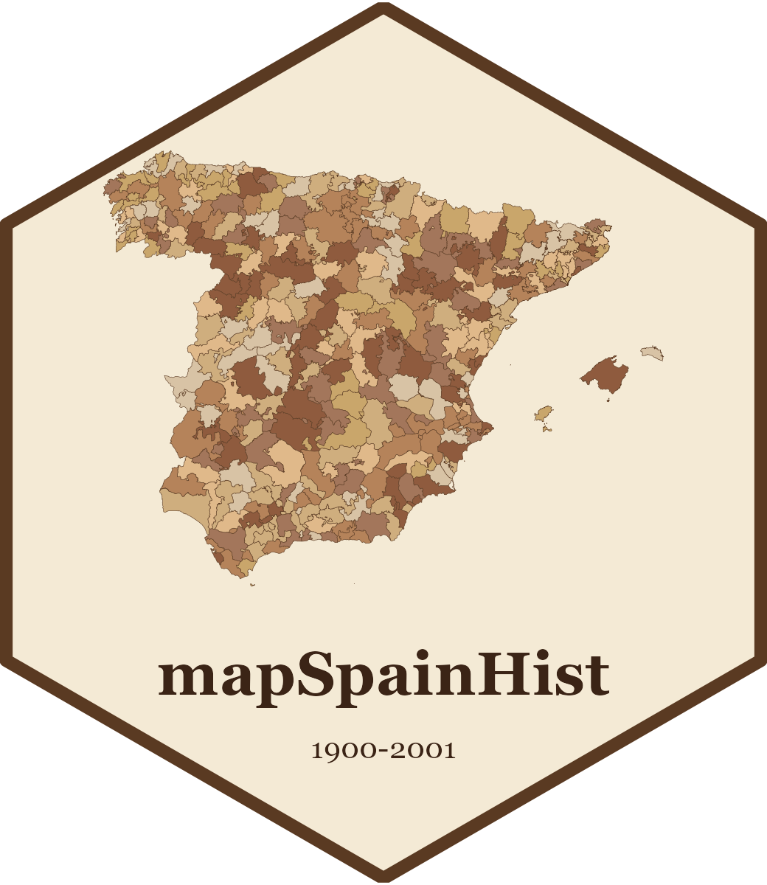

mapSpainHist: Historical Municipal Boundaries of Spain (1900-2001)
Source:R/mapSpainHist-package.R
mapSpainHist-package.RdMunicipal boundaries for each population census between 1900 and 2001, plus provinces, judicial districts and electoral districts built from them. All maps derive from a single partition of the territory, so they have no gaps or overlaps and aggregate consistently.
Warning
approximate boundaries: For most historical municipalities there is no cartography of their limits. Their polygons were reconstructed approximately from the earliest available official municipal division (early 2000s), making sure that the municipal seat (the settlement that usually names the municipality) and, when known, the other settlements of the municipality fall inside the polygon. The maps are especially useful to represent municipal data graphically, but they must be used with caution when geographic variables matter (area, distances, exact borders): they are a useful but imperfect approximation.
Licenses and sources
The code of the package is released under the MIT license. The data (geometries, [censos] and [unitats]) are released under the Creative Commons Attribution 4.0 International license (CC BY 4.0). The reference municipal boundaries derive from SIANE (Instituto Geográfico Nacional, CC BY 4.0); census figures come from the population censuses of the Instituto Nacional de Estadística (INE); municipal changes from *Variaciones de los municipios de España desde 1842* (MINAP); the 1920 electoral districts from the source cited in the methodology.
The full methodology is available on the package website (in Catalan, Spanish and English).
Author
Maintainer: Pau Vall Prat pau.vall@ub.edu (ORCID) [copyright holder]